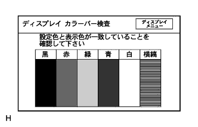
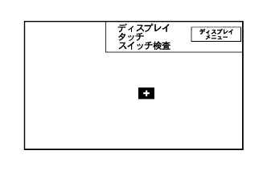
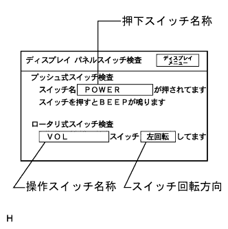
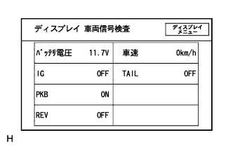
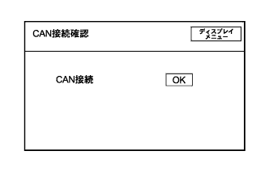
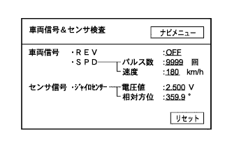
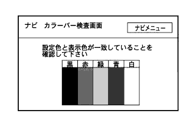
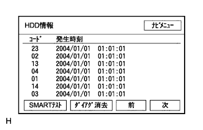
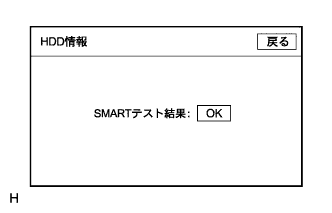

for reference.
for reference.HDD Navigation System Function Inspection |
| 1. Display Color Bar Check |
for reference.Start Diagnosis
Start diagnosis and display the diagnosis check menu screen. (see)
Select "Display Check" on the diagnosis check menu screen to display the display check menu screen.
Select "Color Bar Check" on the display check menu screen to display the display color bar check screen.
 |
Display Color Bar Check
Check that the set colors match the displayed colors.
Compare with the display colors of the navigation color bar check and check that there is no difference.
| 2. Display Touch Switch Check |
for reference.Start Diagnosis
Start diagnosis and display the diagnosis check menu screen. (see)
Select "Display Check" on the diagnosis check menu screen to display the display check menu screen.
Select "Touch Switch Check" on the display check menu screen to display the display pressure-sensitive touch switch check screen.
 |
Display Touch Switch Check
Touch the screen and check that a cross-shaped cursor is displayed at the touched location.
| 3. Display Panel Switch Check |
for reference.Start Diagnosis
Start diagnosis and display the diagnosis check menu screen. (see)
Select "Display Check" on the diagnosis check menu screen to display the display check menu screen.
Select "Panel Switch Check" on the display check menu screen to display the display panel switch check screen.
 |
Panel Switch Inspection
Operate each switch and check that it matches the screen display.
| Display | Description |
|---|---|
| Pressed Switch Name |
|
| Operated Switch Name | Displays the name of the operated rotary switch (screen display is cleared after 6 seconds of no operation) |
| Switch Rotation Direction | Displays the state of the operated rotary switch (screen display is cleared after 6 seconds of no operation) |
| Display Menu | Calls up the display check menu screen |
| 4. Display Vehicle Signal Check |
for reference.Start Diagnosis
Start diagnosis and display the diagnosis check menu screen. (see)
Select "Display Check" on the diagnosis check menu screen to display the display check menu screen.
Select "Vehicle Signal Check" on the display check menu screen to display the display vehicle signal check screen.
 |
Display Vehicle Signal Check
Check the status of the vehicle signals input to the display (navigation receiver assembly).
| Item | Display Method | Signal Input Terminal |
|---|---|---|
| Battery Voltage | Displays battery voltage [V] | Navigation receiver assembly A4 (B) terminal |
| IG | Displays the IG signal status as "ON"/"OFF" | Navigation receiver assembly F2 (IG) terminal |
| PKB | Displays the parking brake status as "ON"/"OFF" (with IG ON) | Navigation receiver assembly F1 (PKB) terminal |
| REV | Displays the REV signal status as "ON"/"OFF" (with IG ON) | Navigation receiver assembly F5 (REV) terminal |
| Vehicle Speed | Calculates vehicle speed from the SPD pulse signal and displays it | Navigation receiver assembly F3 (SPD) terminal |
| TAIL | Displays the TAIL signal (headlight dimmer switch) status as "ON"/"OFF" | Navigation receiver assembly A10 (ILL+) terminal |
)| 5. CAN Connection Check |
for reference.Start Diagnosis
Start diagnosis and display the diagnosis check menu screen. (see)
Select "Display Check" on the diagnosis check menu screen to display the display check menu screen.
Select "CAN Connection Check" on the display check menu screen to display the CAN connection check screen.
 |
CAN Connection Check
Check the status of CAN communication connected to the navigation receiver assembly.
)| 6. Vehicle Signal & Sensor Check |
for reference.Start Diagnosis
Start diagnosis and display the diagnosis check menu screen. (see)
Select "Navigation Check" on the diagnosis check menu screen to display the navigation check menu screen.
Select "Vehicle Signal & Sensor Check" on the navigation check menu screen to display the vehicle signal & sensor check screen.
 |
Vehicle Signal & Sensor Check
| Item | Display Method | Signal Input Terminal |
|---|---|---|
| REV Signal Status | Displays the REV signal status as "ON"/"OFF" (with IG ON) | Navigation receiver assembly F5 (REV) terminal |
| SPD Signal Status | Displays SPD signal status (cumulative number of input pulses since this screen was displayed, and vehicle speed [km/h]) | Navigation receiver assembly F3 (SPD) terminal |
| Gyro Sensor Output Status | Displays gyro sensor output status (voltage value [V] and amount of change in heading [degrees] since this screen was displayed) | - |
| Reset | Resets the gyro sensor relative heading and SPD signal pulse count display items and sets the display content to "0" | - |
Check the status of the vehicle signals (REV, SPD) input to the navigation receiver assembly.
)Check the gyro sensor output status.
| 7. Navigation Color Bar Check |
for reference.Start Diagnosis
Start diagnosis and display the diagnosis check menu screen. (see)
Select "Navigation Check" on the diagnosis check menu screen to display the navigation check menu screen.
Select "Color Bar Check" on the navigation check menu screen to display the navigation color bar check screen.
 |
Navigation Color Bar Check
Check that the set colors match the displayed colors.
Compare with the display colors of the display color bar check and check that there is no difference.
| 8. HDD Information |
for reference.Start Diagnosis
Start diagnosis and display the diagnosis check menu screen. (see)
Select "Navigation Check" on the diagnosis check menu screen to display the navigation check menu screen.
Select "HDD Information" on the navigation check menu screen to display the HDD information screen.
 |
HDD Information
Check the code and take action according to the list.
| Display | Description |
|---|---|
| Code | Displays a code corresponding to the malfunction |
| Time of Occurrence |
|
| Front | Displays the previous page (grayed out when the top row is displayed) |
| Next | Displays the next page (grayed out when the bottom row is displayed) |
| SMART Test | Performs the SMART test |
| Clear Diagnosis | Clears all displayed diagnostic information (press and hold for 3 seconds) |
| Code | Malfunction Description | Action | Remarks |
|---|---|---|---|
| 01 | HDD cannot be recognized | Replace Navigation Receiver Assembly | - |
| 03 | READ error (above -20°C to below 65°C) | If this code occurs frequently with symptoms such as the map not being displayed or memory points not being registered, replace the navigation receiver assembly | - |
| 04 | WRITE error (above -20°C to below 65°C) | If this code occurs frequently with symptoms such as the map not being displayed or memory points not being registered, replace the navigation receiver assembly | - |
| 13 | READ error & low temperature (-20°C or less) | Turn the IG ON and check that the temperature of the navigation receiver assembly has become sufficiently high | This code is recorded when a READ/WRITE error occurs while the HDD temperature is outside the guaranteed operating temperature, and is not a malfunction |
| 14 | WRITE error & low temperature (-20°C or less) | Turn the IG ON and check that the temperature of the navigation receiver assembly has become sufficiently high | This code is recorded when a READ/WRITE error occurs while the HDD temperature is outside the guaranteed operating temperature, and is not a malfunction |
| 23 | READ error & high temperature (65°C or more) |
| This code is recorded when a READ/WRITE error occurs while the HDD temperature is outside the guaranteed operating temperature, and is not a malfunction |
| 24 | WRITE error & high temperature (65°C or more) |
| This code is recorded when a READ/WRITE error occurs while the HDD temperature is outside the guaranteed operating temperature, and is not a malfunction |
SMART Test
Select "SMART Test" on the HDD information screen to display the SMART test result.
 |
Check the SMART test result.
| 9. Navigation Voice Guidance Setting Check (When Voice Guidance is Not Heard) |
Setting Inspection
In the voice settings on the menu screen, set the volume to maximum and check the voice output.
| 10. Gyro Initialization Check (When Vehicle Position Mark Rotates) |
Operate Again
Turn the IG OFF → ON and check whether it returns to normal.